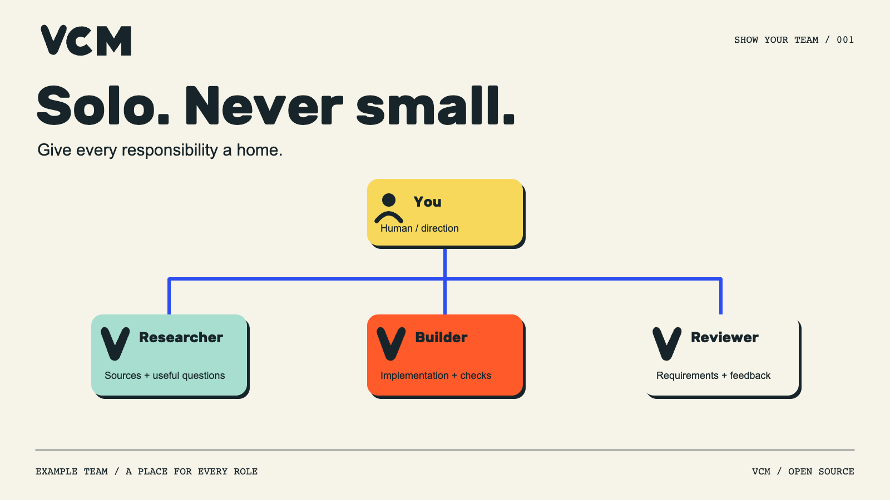
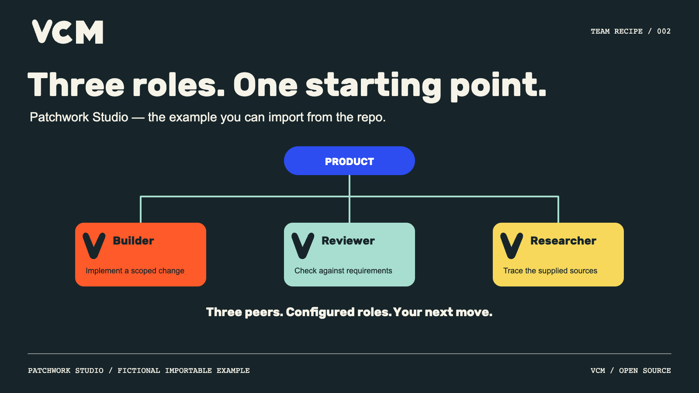
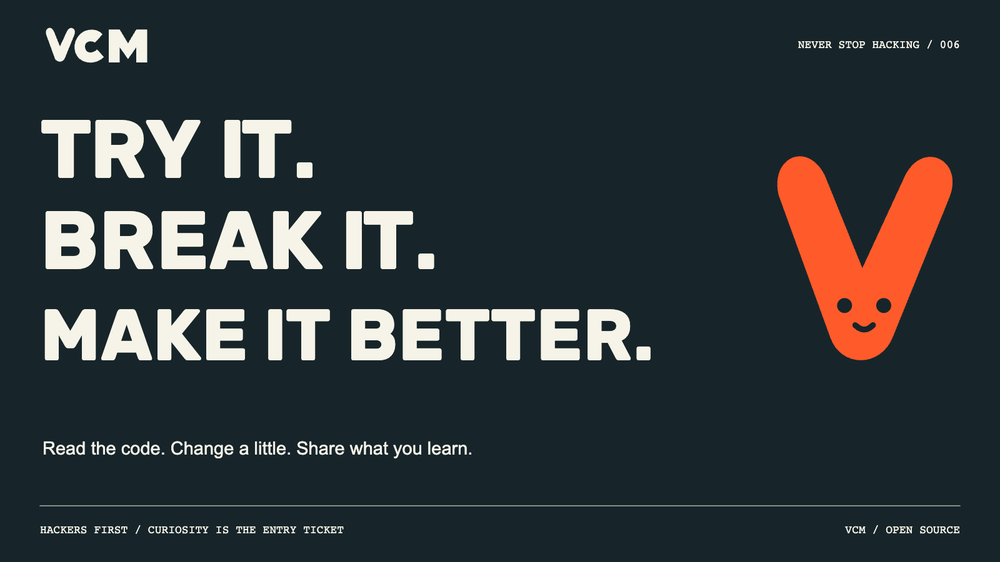
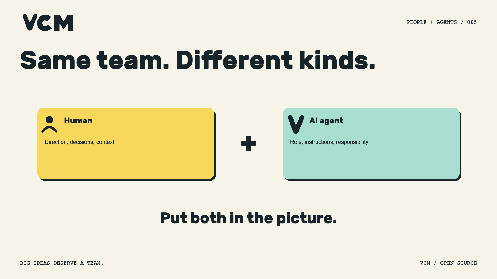
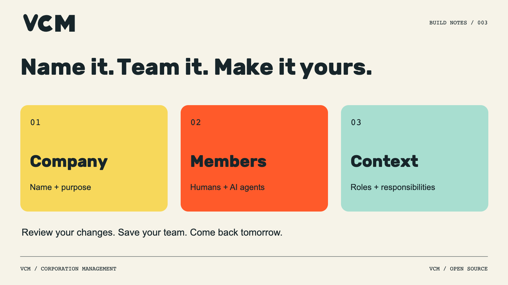
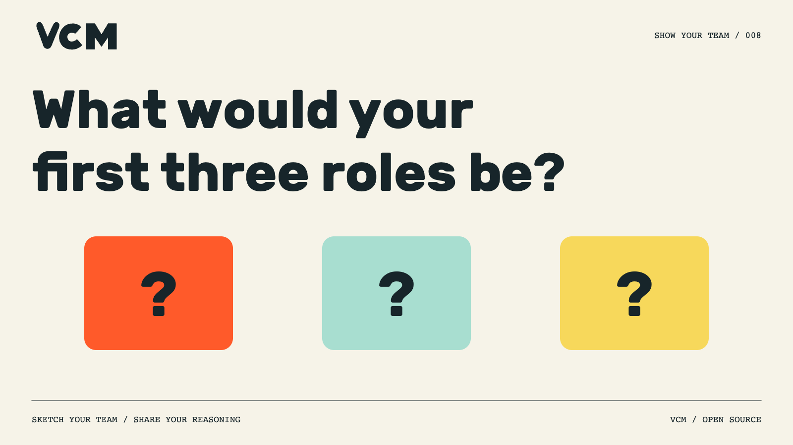
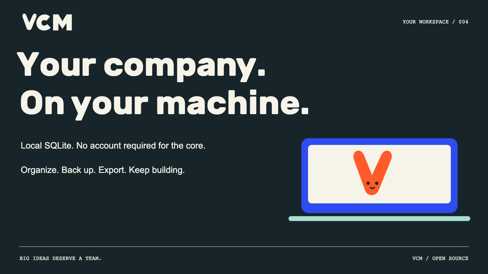
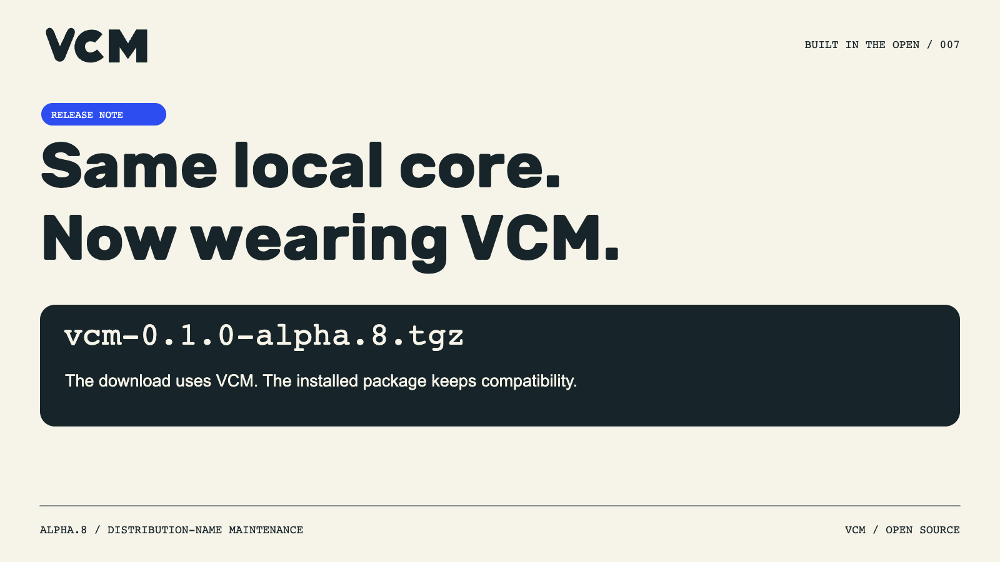
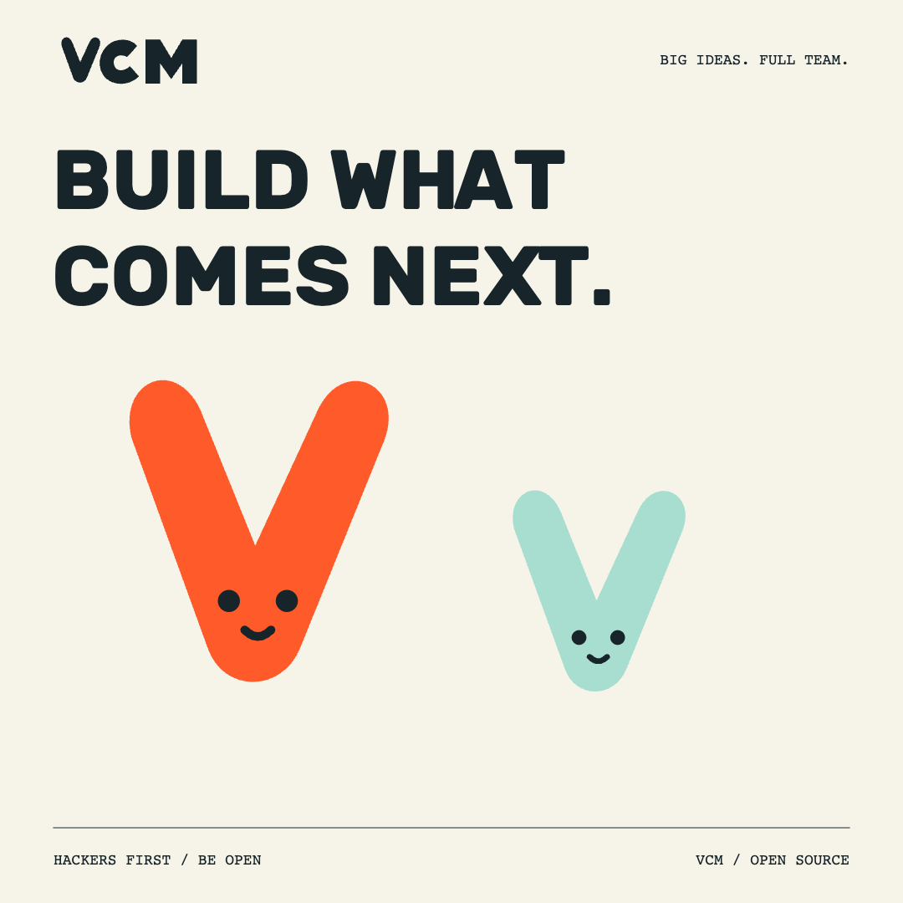

Profile introductionSolo. Never small.
PINNED · DRAFT · 248 / 280
Big ideas deserve a team.
VCM is the open-source workspace for your virtual corporation. Organize humans + AI agents, responsibilities and reporting lines. Keep it on your machine.
MIT core. Technical alpha. Build with us.
https://github.com/strobl/virtual-corporation-manager
Alt text
Solo. Never small. A clay sculpture shows a human founder connected to three
V-shaped orange, mint and yellow teammates. Editorial brand illustration.
Week 1 / MondayShow your team

VCM-X-001 · DRAFT · 218 / 280
Solo founder. Multiple responsibilities.
Start by drawing the team you need: research, building, review. Give each role a clear brief.
This is an example team structure you can organize in VCM. What would you change?
Alt text
Illustrated example org chart: a human owner above Researcher, Builder and
Reviewer AI roles. Lines show reporting, not automatic task execution.
Week 1 / WednesdayTeam recipe

VCM-X-002 · DRAFT · 222 / 280
A starting team you can inspect, import and change.
Patchwork Studio: Builder, Reviewer, Researcher. Three peer roles in one Product department.
The example configures the team; it doesn't run it.
https://github.com/strobl/virtual-corporation-manager/tree/main/docs/examples
Alt text
Patchwork Studio fictional importable example: Builder, Reviewer and Researcher
are three peer AI roles in the Product department. No work has executed.
Week 1 / FridayNever stop hacking

VCM-X-003 · DRAFT · 209 / 280
Read the code. Change a little. Share what you learn.
That's a good first contribution.
VCM has starter tasks for examples, docs and UI work. Bring a small change you can demonstrate.
https://github.com/strobl/virtual-corporation-manager/blob/main/docs/developer-contributing.md
Alt text
Try it. Break it. Make it better. Read the code, change a little and share what
you learn. Orange VCM mascot.
Week 2 / MondayShow your team

VCM-X-004 · DRAFT · 225 / 280
Your org chart should have room for people.
VCM lets you add humans and AI agents to the same company, with explicit roles and responsibilities.
A human stays a human. An agent stays an agent. The company keeps the context.
Alt text
A human member and an AI agent side by side. Different member kinds belong in the
same VCM company.
Week 2 / WednesdayBuild notes

VCM-X-005 · DRAFT · 223 / 280
The first move is simple.
Name your corporation. Add its purpose. Bring in a person or an AI agent. Give them a responsibility. Review the change and save.
Start with the company you want to build.
https://github.com/strobl/virtual-corporation-manager#install-the-reviewed-archive
Alt text
Three steps in VCM: company name and purpose; human and AI members; roles and
responsibilities. Review changes, save and return later.
Week 2 / FridayShow your team

VCM-X-006 · DRAFT · 220 / 280
You have an idea and three empty role cards.
What goes on them?
Share the three roles, one responsibility each, and what you would keep for yourself.
We're collecting ways to think about teams, not fantasy headcounts.
Alt text
What would your first three roles be? Three empty role cards invite builders to
sketch their team.
Week 3 / MondayYour workspace

VCM-X-007 · DRAFT · 240 / 280
Your company, ready for the next session.
VCM keeps its local workspace in SQLite. Reopen the same company, export its definition, or make a backup.
No account is required for the local core. Optional provider execution has its own setup.
Alt text
Your company on your machine. The VCM core uses local SQLite and requires no
account. Organize, back up and export. Orange mascot on a cobalt laptop.
Week 3 / WednesdayBuilt in the open

VCM-X-008 · DRAFT · 213 / 280
A small naming change, a clearer download.
Alpha.8 uses vcm-0.1.0-alpha.8.tgz. The installed package keeps its compatibility name; the command is vcm.
Same local core. Clearer front door.
https://github.com/strobl/virtual-corporation-manager/releases/tag/v0.1.0-alpha.8
Alt text
Alpha.8 distribution-name maintenance: download vcm-0.1.0-alpha.8.tgz. The local
core and installed package compatibility remain.
Week 3 / FridayBuild what comes next

VCM-X-009 · DRAFT · 189 / 280
Play 2 win. Be adaptable. Never stop hacking. Hackers first. Be open.
Five values. Plenty of ways to build.
What's one thing you changed in your tools this week that made the work better?
Alt text
Build what comes next. Orange and mint VCM mascots. Hackers first. Be open.
Week 4 / MondayShow your team
VCM-X-010 · DRAFT · 233 / 280
A useful role answers three questions.
What are you responsible for?
What context do you need?
Who reviews the result?
Try those questions on your next team sketch. The org chart gets more interesting when the boxes mean something.
Alt text
Illustrated example org chart: a human owner above Researcher, Builder and
Reviewer AI roles. Lines show reporting, not automatic task execution.
Week 4 / WednesdayBuild notes
VCM-X-011 · DRAFT · 234 / 280
Make the example your own.
Import Patchwork Studio. Open one member. Rewrite a responsibility. Review and save. Export the definition when you're ready to reuse it.
Small edits are a good way to learn a tool.
https://github.com/strobl/virtual-corporation-manager/tree/main/docs/examples
Alt text
Patchwork Studio fictional importable example: Builder, Reviewer and Researcher
are three peer AI roles in the Product department. No work has executed.
Week 4 / FridaySolo. Never small.
VCM-X-012 · DRAFT · 209 / 280
Big ideas deserve a team.
Start with a purpose. Make the responsibilities visible. Keep learning as you build.
VCM is open source, and we're building it in the open. Come take a look.
https://github.com/strobl/virtual-corporation-manager
Alt text
Solo. Never small. A clay sculpture shows a human founder connected to three
V-shaped orange, mint and yellow teammates. Editorial brand illustration.
{kind=link}
{kind=link}
{kind=link}
{kind=link}
{kind=link}
{kind=link}
{kind=link}
{kind=link}
{kind=link}
{kind=link}
{kind=link}
{kind=link}
{kind=link}
{kind=link}
{kind=link}
{kind=link}
{kind=link}
{kind=link}
{kind=link}
{kind=link}
{kind=link}
{kind=link}
{kind=link}
{kind=link}
{kind=link}
{kind=link}
{kind=link}